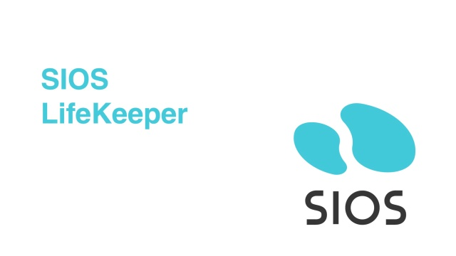

CS Graduate, Product Support Engineer, Senior Systems Support Technician
I'm Matthew Vinson, a B.S. grad of Computer Science from The University of South Carolina. During my time in college, I interned at SIOS Technology as a Product Support Engineer for 2 years, and following my graduation, worked as a contractor for Palmetto GBA as a Senior Systems Support Engineer. I began coding my sophomore year in high school and fell in love with programming, which lead me to pursue computer science in college. Though my previous experience is in support, I'm looking to move into the development-side of IT, as that was my main goal from when I started programming back in high school.
Currently, I'm refining my C# skills and learning the .NET framework to develop a Counter-Strike 2 skin trade-up calculator. For information on how the trade-up system works, check out this link. Most calculators that I can find on the web are very basic, requiring you to select 10 skins to find your desired outcome. My goal is to create a calculator that cuts out all the guess-work a user would have to do, enabling user to input the skin they want, their desired price range, and their desired float (condition of the skin), and produce that optimal 10 skins needed. This is a work in progress at the moment, hopefully soon I'll upload a beta version onto my Github for people to try out.
TAYSR is an iOS app for iPhones that allows users to keep track of a list of their to-do tasks and objectives all in one place in an easy-to-read format. The app uses an account system to make sure the user can log in and retrieve their tasks on any device, and the app stores every user's tasks on a database to make sure no data is lost.
The app contains a variety of useful features for task tracking, including categories and subtasks to group related tasks, sorts and filters to help the user organize a large number of tasks, sharing features to allow the user to send tasks to other app users, and color coding to allow users to identify task details at a glance.
This app is ideal for anyone who wants to keep track of a list of tasks and goals they need to accomplish, and stay on top of getting them done and ensuring that they are continuing to make progress on their goals. The app is free to use and can be downloaded for iPhones.
For more information, screenshots and a demo video, check out our website
During my time at SIOS, I took part in a project to build an Active Recovery Kit (ARK) for MongoDB. This was both my first major project and my first professional project. This project was built for SIOS' Linux line of projects and was developed using Perl, Java, and Bash. Before this, I never had any experience coding in Perl, but through my knowledge of OOP and reading Perl documentation, I was able to accomplish the tasks given to me with ease. I was responsible for the startup scripts, ensuring server connection, and the GUI. Through this project, I was able to strengthen my understanding of app development by getting hands-on experience with integrating different programming languages, managing system resources efficiently, and troubleshooting complex issues. Additionally, collaborating with a diverse team exposed me to various perspectives and taught me valuable communication and teamwork skills. Overall, this project was instrumental in shaping my professional growth and solidifying my passion for software development
My role at SIOS Technology Corporation is a Product Support Engineer Intern on the Linux team. My main responsibility is handling customer support cases, which includes contacting the customer, looking through logs to identify what went wrong, and providing a solution to the customer. Other responsibilities are rehosting customer licenses, answering general questions, building reports for the team, and side-projects assigned to me. During my time here, I worked on a team of interns and new-hires create a recovery kit utilizing SIOS’s pre-made infrastructure compatible with MongoDB, using Perl.
Following graduation, I accepted a roll as a Senior Systems Support Technician on the eCommerce team for Palmetto GBA. Duties there included:
● Diagnosed system errors, identified possible causes and implemented solutions to resolve problems.
● Provided technical assistance and support for incoming queries and issues related to computer systems, software, hardware and networks.
● Worked closely with developers to ensure minimal impact to the customer when deploying new or fixed code.
● Monitored system performance and troubleshot any issues that arise.
● Wrote SQL queries to update and report data
During my time in college, I took a variety of class to further-along my future career in software development. From basic 100-level classes my freshman year such as Data Structures & Algorithms, Computing in the Modern World, and Linux Fundamentals, to advanced 500-level classes my Junior and Senior years like Database System Design, Artificial Intelligence, and Computer Networking, I feel a significant evolution in my understanding and proficiency in various aspects of computer science. Throughout my academic journey, I have delved into complex topics, honed my problem-solving skills, and gained practical experience through hands-on projects and coursework. In courses like Database System Design, I learned about the intricacies of data modeling, normalization, and query optimization, laying a strong foundation for designing efficient and scalable database systems. Similarly, in Artificial Intelligence, I explored algorithms for machine learning, natural language processing, and computer vision, empowering me to develop intelligent systems capable of autonomous decision-making and human-like interaction. Additionally, in Computer Networking, I deepened my knowledge of network protocols, routing algorithms, and security mechanisms, equipping me with the expertise to design and manage robust and secure network infrastructures. Overall, my academic journey has been both enriching and challenging, providing me with the skills, knowledge, and confidence to tackle complex problems and contribute meaningfully to the field of computer science.